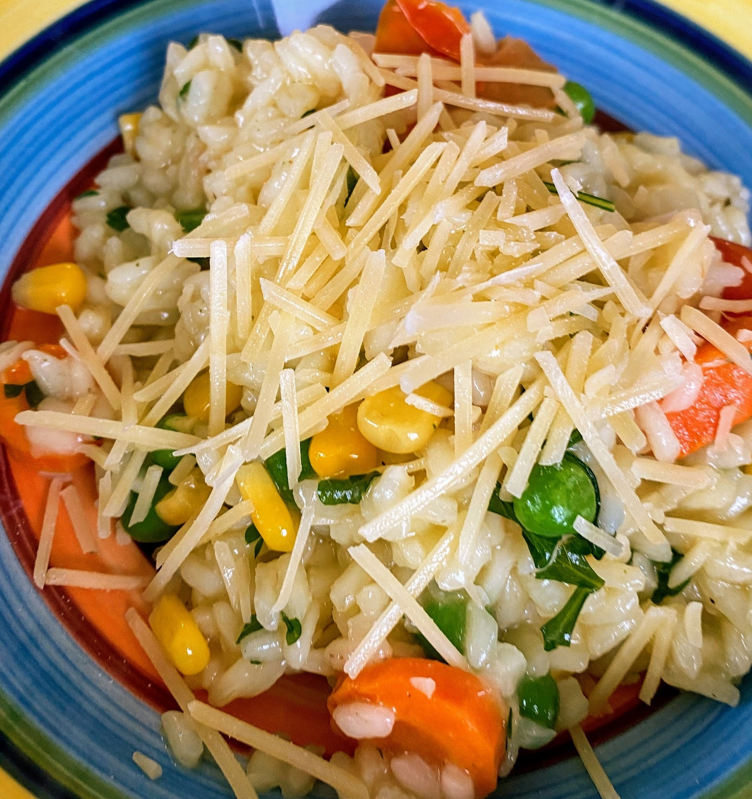

Instant Pot Basic Risotto

Preheat oven to 200 degrees
someroast vegetables
Cut roast vegetables into 2cm cubes and season Bake until golden
someolive oilsomemargarine
Place olive oil and margarine in multicooker, press saute, allow to heat up for 1 min
1 cloveonion and @garlic
Add onion and @garlic and saute for 2 mins
1 cupbrown rice2 cupsarborio rice
Add brown rice and arborio rice, stirring constantly
1/2 cupwhite wine
Add white wine and cook for 4 mins
4 cupsvegetable stock
Add vegetable stock Select manual, high setting and cook for 6 mins
Leave to warm for 5 mins Release pressure
1/2 cupparmesan cheese1/2 cupfrozen peas
Add in roast vegetables parmesan cheese and frozen peas
1 tbsplemon zestsomesalt
Serve with lemon zest, salt and @pepper